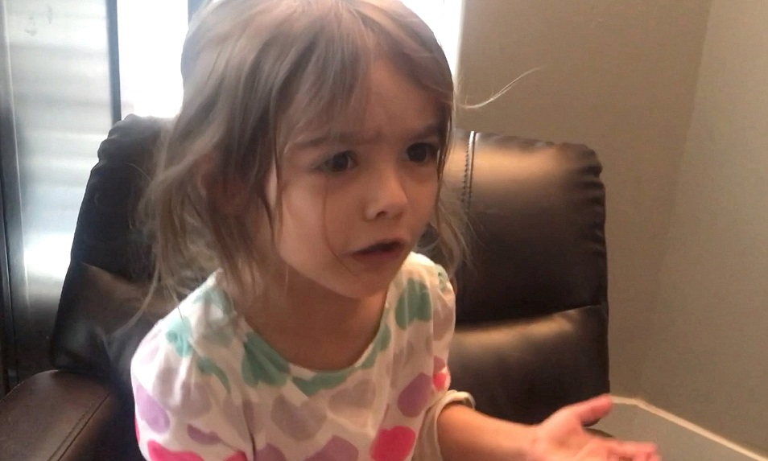

UBC SJI - Queer of Colour Theorizing
February 23rd, 2021
You may remember my series or articles detailing the ongoings of the UBC "Social Justice Institute". Well, I just went back to their site for more evergreen content, when I found this.

"Queer of Colour Theorizing"
TDC_ARTICLE_START
EXPLORE COURSES
From #revolution: feminism and social justice to Queer of Colour Theorizing, The Social Justice Institute offers dynamic courses for students to engage with and think critically. 2020/21 course registration opens on June 16, 2020 (graduate) and June 23, 2020 (undergraduate)!
TDC_ARTICLE_STOP

I will never be able to properly satirize these people to the extent that they do themselves. However, let me attempt to categorize just a few of the unparodyable absurdities in this two sentence statement.
1) #revolution. LOL, if you still have a twitter account you're not a revolutionary.
2) feminism Harvey Weinsteinism in the year 2021.
3) Unironically using the term "social justice."
4) Queer of Colour - LOL
5) Queer of Colour THEORIZING - LOL WTF does this even mean? Coming up with theories as a perverted brown dude?
6) Do these people think that capitalization is just "fuck it, whatever"? Or maybe proper grammer and punctuation is a tool of Cisheteronormative Straight White Male Patriarchy.
7) Oh I'm sure there's going to be a lot of CRITICAL THINKING going on in these courses. Maybe they've not gotten the memo that critical thinking == bad.
8) Finally, I know it's petty, but what is with that exclamation point to end the sentence? Is course registration really that exciting?
 Nice to check in with the brave warriors against Cisheteronormativity every now and again.
Nice to check in with the brave warriors against Cisheteronormativity every now and again.
Nice to check in with the brave warriors against Cisheteronormativity every now and again.